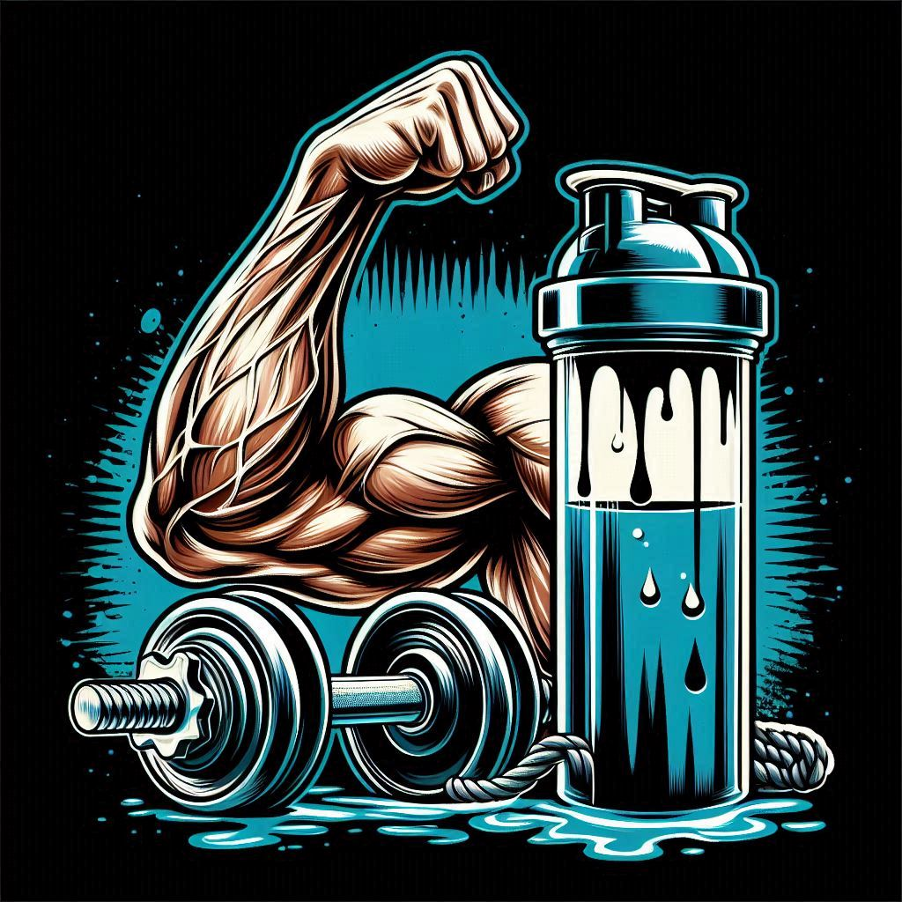
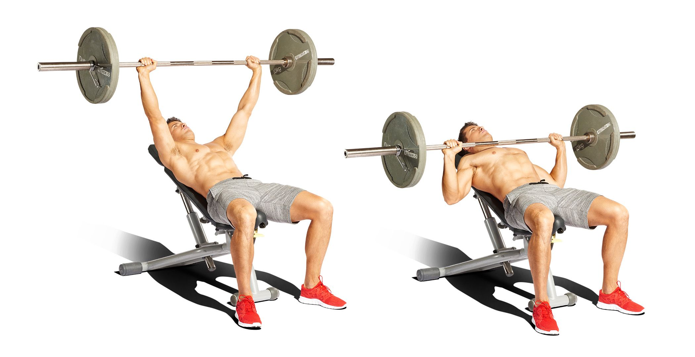
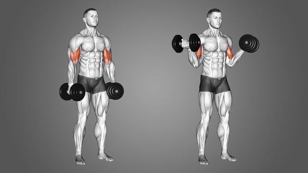
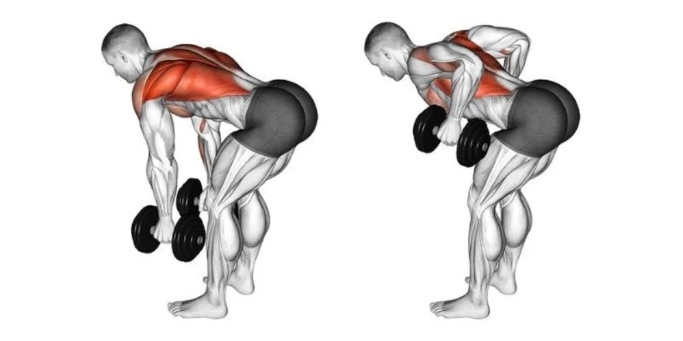
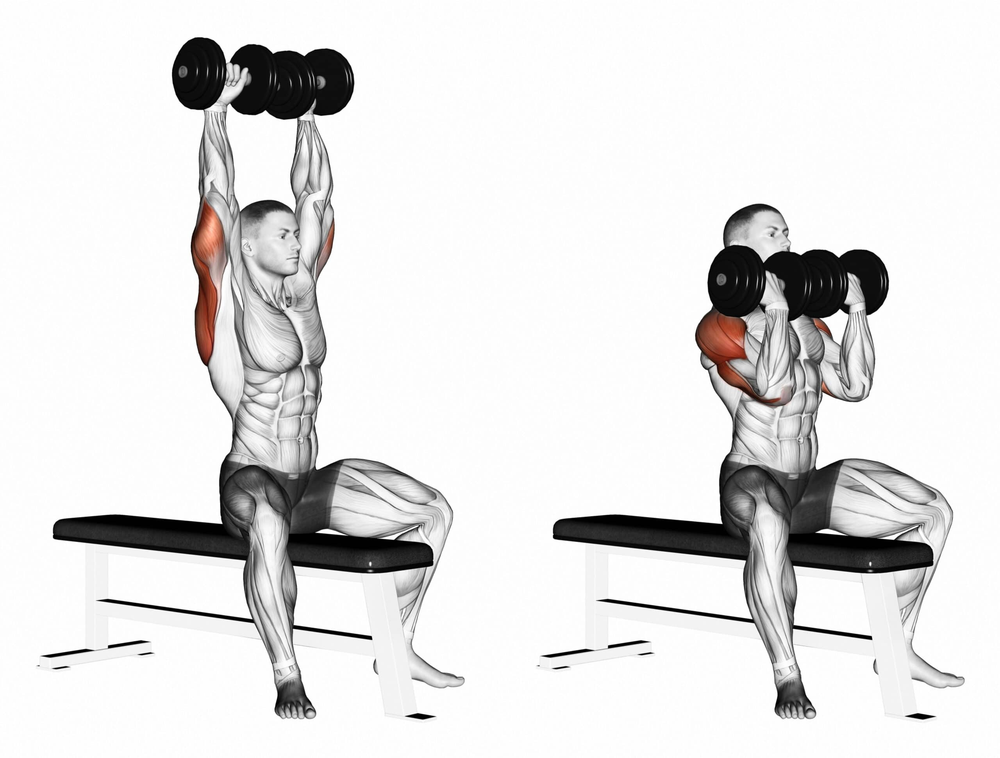

Strong Foundations: Building Strength Through Weightlifting

Why Weightlifting Is Good For Your Body
There are a many reasons why Weightlifting is good for your body such as its benefits to strength and muscle mass, bone health, metabolic health, improved physical function, enhanced mental health, joint health, and heart health. It provides a lot of positive things to your health mentally and physically which is why I have created this page that is dedicated to some of the best Weightlifting workouts that target different parts of the body to keep you feeling strong and healthy.
Targeting Muscle Groups
Image of the gym.
Chest
Targeting the chest area when weight lifting is important for several reasons. One reason is to help with upper body strength. Developing strength in the chest muscles (pectoralis major and minor) is crucial for overall upper body strength. A strong chest helps you perform everyday tasks such as pushing objects, lifting items, and maintaining good posture. It also helps in having a balanced muscle development. Working the chest muscles helps balance out muscle development in the upper body. Neglecting the chest can lead to muscle imbalances, which may increase the risk of injuries and affect posture. The chest muscles play a supporting role in many upper body exercises, including shoulder presses and triceps exercises. A strong chest can enhance performance in these exercises and reduce the risk of injury by providing stability and support.
One very helpful and great weightlifting exercise for your chest is bench press.
How to Bench Press:
Set Up:
Lie flat on a bench with your feet firmly planted on the ground.
Grip the barbell slightly wider than shoulder-width apart, with your palms facing away from you (overhand grip).
Positioning:
Lift the bar off the rack and hold it directly above your chest with your arms extended.
Lower the bar slowly until it touches your chest, keeping your elbows at about a 45-degree angle to your body.
Execution:
Press the bar back up to the starting position, extending your arms fully but without locking your elbows.
Keep your back flat against the bench and maintain a slight arch in your lower back.
Breathe in as you lower the bar and exhale as you press it back up.
Repetitions:
Aim for 8-12 repetitions per set, depending on your fitness goals and the amount of weight you're lifting.
Perform 3-4 sets with adequate rest between each set.

Image of how to perform the bench press workout.
Biceps
Targeting your biceps when weight lifting is also important for many reasons too. The biceps brachii muscle is responsible for flexing the elbow joint, which is crucial for performing everyday tasks like lifting objects, pulling, and carrying. Strengthening your biceps helps improve your ability to perform these activities effectively. Building balanced muscle development throughout your body is important for overall strength and injury prevention. Neglecting to train your biceps can result in muscle imbalances, which may lead to issues like poor posture and increased risk of injury. While compound exercises like bench presses and rows engage the biceps to some extent, targeting them directly with isolation exercises like bicep curls allows for more focused and intense muscle activation. This can lead to greater muscle growth and strength gains in the biceps.
The bicep curl workout is one of many useful techniques for building strength in your biceps.
How to do the Bicep Curl:
Starting Position:
Stand tall with your feet shoulder-width apart and hold a dumbbell in each hand, palms facing forward (supinated grip).
Keep your back straight, chest up, and shoulders pulled back and down. Engage your core muscles to maintain stability.
Execution:
Begin with your arms fully extended down by your sides, with your elbows close to your torso.
Keeping your upper arms stationary, exhale as you slowly bend your elbows and curl the dumbbells towards your shoulders. Focus on squeezing your biceps at the top of the movement.
Keep your wrists straight throughout the exercise, avoiding any excessive movement or swinging.
Top Position:
Once the dumbbells reach shoulder level or slightly higher, pause for a brief moment to contract your biceps fully.
Lowering Phase:
Inhale as you slowly lower the dumbbells back to the starting position, maintaining control and resisting the urge to let them drop quickly.
Fully extend your arms at the bottom of the movement, but avoid locking out your elbows to keep tension on the biceps.
Repetitions:
Aim for 8-12 repetitions per set, depending on your fitness level and goals.
Perform 3-4 sets with adequate rest between each set.

Image of how to perform the bicep curl workout.
Back
Focusing on the back is another very crucial part of weightlifting for many reasons. Strengthening the muscles of the back helps to balance the musculature of the upper body. A strong back helps counteract the effects of daily activities that often involve forward-reaching movements, such as sitting at a desk or driving, which can lead to muscle imbalances and poor posture. The muscles of the back play a crucial role in various functional movements, such as pulling, lifting, and carrying objects. Strengthening these muscles improves your ability to perform everyday tasks and sports activities with ease and efficiency. A strong back complements upper body strength by providing a stable base for other muscle groups to work from. For example, strong back muscles assist in movements like bench presses, overhead presses, and bicep curls by providing a stable platform and helping to transfer force effectively.
The dumbbell row is a great workout for targeting the back.
How to do the Dumbbell Row:
Setup:
Stand with your feet shoulder-width apart, holding a dumbbell in each hand.
Keep your back straight and your knees slightly bent.
Engage your core muscles to stabilize your body.
you can also use a weight bench as support for your leg and hand that are not performing this workout.
Positioning:
Bend forward at your waist while keeping your back flat.
Let your arms hang down towards the floor with the dumbbells in your hands.
Your palms should be facing each other, and your elbows should be close to your body.
Execution:
Lift the dumbbells towards your sides by bending your elbows, keeping them close to your body.
Focus on squeezing your shoulder blades together as you lift the dumbbells.
Exhale as you lift the dumbbells and keep your core engaged to maintain stability.
Lift until your elbows are at or just past the level of your torso, and your upper arms are parallel to the ground.
Hold the position for a moment, feeling the contraction in your back muscles.
Lowering:
Slowly lower the dumbbells back down to the starting position, maintaining control throughout the movement.
Inhale as you lower the dumbbells and keep your back flat.
Repetition:
Perform the desired number of repetitions for one side before switching to the other side.
Aim for 8-12 repetitions per set, depending on your fitness level and goals.

Image of how to perform the dumbbell row workout.
Shoulders
Targeting the shoulders, also known as the deltoid muscles in weightlifting is also important for several reasons too. The shoulders are involved in many everyday movements, such as lifting, pushing, and reaching. Strengthening the shoulder muscles improves your ability to perform these tasks efficiently and reduces the risk of injury during daily activities. Strong shoulders contribute to joint stability and integrity, particularly in the glenohumeral joint (shoulder joint). Strengthening the muscles surrounding the shoulder joint helps support and protect it, reducing the risk of injuries such as dislocations or rotator cuff tears. Well-developed shoulder muscles can improve posture by helping to keep the shoulders back and down. This can counteract the forward-slumping posture that is common with prolonged sitting or desk work, reducing the risk of neck and upper back pain.
The Arnold press is a very challenging and great workout for targeting your shoulders and yes, its named after the actor Arnold Schwarzenegger who popularized this exercise.
How to do the Arnold Press:
Setup:
Sit on a bench with back support or stand with your feet shoulder-width apart.
Hold a dumbbell in each hand at shoulder height with your palms facing towards you and your elbows bent.
Ensure your back is straight, and your core is engaged for stability.
Execution:
Start with the dumbbells positioned just outside your shoulders, with your elbows bent and palms facing towards you.
As you press the dumbbells overhead, rotate your wrists so that your palms face away from you at the top of the movement.
Continue pressing the dumbbells until your arms are fully extended overhead, but do not lock out your elbows.
Hold the fully extended position briefly, feeling the contraction in your shoulder muscles.
Lowering:
Slowly lower the dumbbells back down to the starting position while simultaneously rotating your wrists back to the starting position, palms facing towards you.
Lower the dumbbells until they are just outside your shoulders, maintaining control throughout the movement.
Repetition:
Repeat the movement for the desired number of repetitions. Aim for 8-12 repetitions per set, depending on your fitness level and goals.

Image of how to perform the arnold press workout.
Legs
Having a weightlifting workout for legs is very important too so that you are not only working on your upper body, but also the lower body. There are various reasons why targeting the legs is crucial.The legs are the foundation of your body and play a significant role in almost all movements, whether it's walking, running, jumping, or lifting objects. Strengthening the leg muscles enhances your ability to perform daily activities with ease and efficiency. The large muscle groups in the legs, such as the quadriceps, hamstrings, and glutes, have a high potential for muscle growth. Engaging these muscles through weightlifting stimulates muscle hypertrophy, which can increase overall muscle mass and metabolic rate. Additionally, leg workouts stimulate the release of hormones like testosterone and growth hormone, which play crucial roles in muscle growth and fat loss throughout the body. Strong leg muscles contribute to better balance and stability, reducing the risk of falls and injuries, especially as you age. Strengthening the legs helps maintain proper alignment of the body, which is essential for good posture and injury prevention during various physical activities. Weight-bearing exercises like squats and lunges help maintain and improve bone density, reducing the risk of osteoporosis and fractures later in life. The stress placed on the bones during leg workouts stimulates bone remodeling, making them stronger and more resilient over time.
The barbell squat is a great workout that targets many parts of the leg, as well as muscles in the core and upper body for stabilization.
How to do the Barbell Squat:
Setup:
Start by setting up a barbell on a squat rack at about chest height. Ensure that the bar is securely positioned on the rack.
Adjust the height of the safety bars or pins to a level just below your squat depth to serve as a safety measure in case you need to bail out of the lift.
Approach the barbell and position yourself directly under it, so it rests across your upper back, just below the base of your neck.
Grip the barbell with your hands slightly wider than shoulder-width apart, palms facing forward, and elbows pointing down towards the floor.
Positioning:
Step forward and position your feet slightly wider than shoulder-width apart, with your toes pointing slightly outward (about 10-30 degrees).
Engage your core muscles and maintain a straight back throughout the movement. Keep your chest up and your gaze forward or slightly upward.
Descent:
Take a deep breath and brace your core.
Initiate the movement by bending at your hips and knees simultaneously, as if you're sitting back into a chair. Lower your body towards the ground in a controlled manner.
Keep your knees tracking in line with your toes and ensure they do not collapse inward.
Continue descending until your thighs are parallel to the ground or slightly below, maintaining a neutral spine position.
Ascent:
Once you've reached the bottom position, exhale and drive through your heels to push yourself back up to the starting position.
Focus on driving your hips forward and extending your knees simultaneously.
Keep your chest up and maintain a straight back throughout the ascent.
Avoid locking out your knees at the top of the movement to maintain tension in your muscles.
Repetition:
Repeat the squat movement for the desired number of repetitions. Aim for 8-12 repetitions per set, depending on your fitness level and goals.
Rest for a brief period between sets if needed, but maintain proper form throughout the workout.
Safety:
If you're new to squatting or using heavy weights, consider using a spotter or squat rack with safety bars to prevent injury.
Start with lighter weights and gradually increase the load as you become more comfortable with the movement and your strength improves.
Image of how to perform the barbell squat.
Table
Targeted Muscle group
Most Beneficial exercise
Alternative Exercises
Chest
The most beneficial exercise for the chest is bench press because it's a compound exercise, meaning it engages multiple muscle groups simultaneously. It primarily targets the pectoralis major, the largest muscle in the chest, but also involves the shoulders (deltoids) and triceps to a significant extent. This compound nature allows for efficient training of multiple muscle groups in one exercise.
Some alternative exercises for working the chest in weightlifting are dumbbell Bench Press, Incline Bench press, Decline Bench press, and Dumbbell flys.
Biceps
The most beneficial bicep workout in weightlifting is the bicep curl because it specifically targets the biceps brachii muscle, which is responsible for flexing the elbow joint and supinating the forearm (rotating the palm upward). By isolating the biceps, this exercise allows for focused and direct stimulation of the muscle.
Some alternative exercises for the biceps are concentrated curls, preacher curls, hammer curls, and reverse grip barbell curls.
Back
The most beneficial exercise for the back is the dumbbell row exercise because it primarily target the muscles of the upper back, particularly the latissimus dorsi (lats), rhomboids, and trapezius. Additionally, it engages other muscles such as the rear deltoids, biceps, and forearms to a lesser extent. This exercise allows for focused and direct stimulation of these muscles, promoting strength and hypertrophy (muscle growth) in the back.
Some alternative weightlifting workouts for the back are the barbell bent-over row, the deadlift, lat pulldowns, single arm dumbbell rows, and dumbbell pullovers.
Shoulders
The most beneficial weightlifting workout for the shoulders are arnold presses because it targets multiple muscles of the shoulder complex, including the anterior deltoid (front), lateral deltoid (side), and posterior deltoid (rear), as well as the trapezius and triceps. By engaging these muscles simultaneously, the Arnold press helps to develop balanced strength and size throughout the shoulder region.
A few alternative weightlifting workouts for the shoulders are overhead press,dumbbell shoulder press, lateral raises, front raises, and the reverse fly.
Legs
The most beneficial weightlifting workout for the legs are barbell squats because its a compound exercise that engages multiple muscle groups simultaneously, including the quadriceps, hamstrings, glutes, adductors, and lower back muscles. This compound nature allows for efficient training of multiple leg muscles in one exercise, leading to greater overall muscle activation and development.
Alternate weightlifting workouts that target the legs are deadlifts, dumbbell lunges, leg press, bulgarian split squats, dumbbell step-ups.